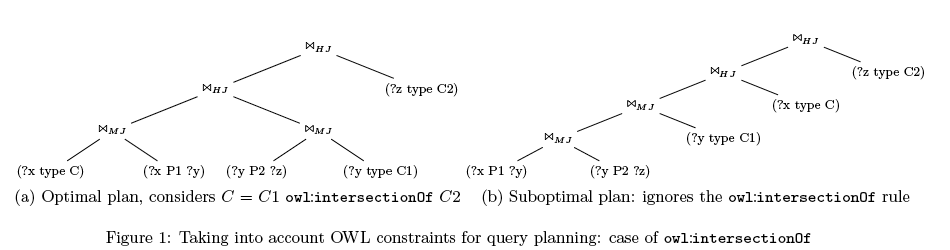

The Linked Data paradigm has become the prominent enabler for sharing huge volumes of data using Semantic Web technologies, and has created novel challenges for non-relational data management systems, such as RDF and graph engines. Efficient data access through queries is perhaps the most important data management task, and is enabled through query optimization techniques, which amount to the discovery of optimal or close to optimal execution plans for a given query.
In this post, we propose a different approach to query optimization, which is meant to complement (rather than replace) the standard optimization methodologies for SPARQL queries. Our approach is based on the use of schema information, encoded using OWL constructs, which often accompany Linked Data.
OWL adopts the Open World Assumption and hence OWL axioms are perceived primarily to infer new knowledge. Nevertheless, ontology designers consider OWL as an expressive schema language used to express constraints for validating the datasets, hence following the Closed World Assumption when interpreting OWL ontologies. Such constraints include disjointness/equivalence of classes/properties, cardinality constraints, domain and range restrictions for properties and others.
This richness of information carried over by OWL axioms can be the basis for the development of schema-aware techniques that will allow significant improvements in the performance of existing RDF query engines when used in tandem with data statistics or even other heuristics based on patterns found in SPARQL queries. As a simple example, a cardinality constraint at the schema level can provide a hint on the proper join ordering, even if data statistics are missing or incomplete.
The aim of this post is to show that the richness of information carried over by OWL axioms under the Close World Assumption can be the basis for the development of schema-aware optimization techniques that will allow considerable improvement for query processing. To attain this objective, we discuss a small set of interesting cases of OWL axioms; a full list can be found here.
Schema-Based Optimization Techniques
Here we provide some examples of queries, which, when combined with specific schema constraints expressed in OWL, can help the optimizer in formulating the (near to) optimal query plans.
A simple first case is the case of constraint violation. Consider the query below, which returns all instances of class <A> which are fillers of a specific property <P>. If the underlying schema contains the information that the range of <P> is class <B>, and that class <B> is disjoint from class <A>, then this query should return the empty result, with no further evaluation (assuming that the constraints associated with the schema are satisfied by the data). An optimizer that takes into account schema information should return an empty result in constant time instead of trying to optimize or evaluate the large star join.
SELECT ?v
WHERE { ?v rdf : type <A> .
?u <P> ?v . ?u <P> ?v1 .
?u <P1 > ?v2 . ?u <P2 > ?v3 .
?u <P3 > ?v4 . ?u <P4 > ?v5}
Schema-aware optimizers could also prune the search space by eliminating results that are known a priori not to be in the answer set of a query. The query above is an extreme such example (where all potential results are pruned), but other cases are possible, such as the case of the query below, where all subclasses of class <A1> can immediately be identified as not being in the answer set.
SELECT ?c
WHERE { ?x rdf: type ?c . ?x <P> ?y .
FILTER NOT EXISTS \{ ?x rdf: type <A1 > }}
Another category of schema-empowered optimizations has to do with improved selectivity estimation. In this respect, knowledge about the cardinality (minimum cardinality, maximum cardinality, exact cardinality, functionality) of a property can be exploited to formulate better query plans, even if data statistics are incomplete, missing or erroneous.
Similarly, taking into account class hierarchies, or the definition of classes/properties via set theoretic constructs (union, intersection) at the schema level, can provide valuable information on the selectivity of certain triple patterns, thus facilitating the process of query optimization. Similar effects can be achieved using information about properties (functionality, transitivity, symmetry etc).
As an example of these patterns, consider the query below, where class <C> is defined as the intersection of classes <C1>, <C2>. Thus, the triple pattern (?x rdf:type <C>) is more selective than (?y rdf:type <C1>) and (?z rdf:type <C2>) and this should be immediately recognizable by the optimizer, without having to resort to cost estimations. This example shows also how unnecessary triple patterns can be pruned from a query to reduce the number of necessary joins. Figure 1 illustrates the query plan obtained when the OWL intersectionOf construct is used.
SELECT ?x
WHERE { ?x rdf: type <C> . ?x <P1 > ?y .
?y rdf : type <C1 > . ?y <P2 > ?z . ?z rdf : type <C2 > }

Schema information can also be used by the query optimizer to rewrite SPARQL queries to equivalent ones that are found in a form for which already known optimization techniques are easily applicable. For example, the query below could easily be transformed into a classical star-join query if we know (from the schema) that property P4 is a symmetric property.
SELECT ?y ?y1 ?y2 ?y3
WHERE { ?x <P1 > ?y . ?x <P2 > ?y1 .
?x <P3 > ?y2 . ?y3 <P4 > ?x }
Conclusion
In this post we argued that OWL-empowered optimization techniques can be beneficial for SPARQL query optimization when used in tandem with standard heuristics based on statistics. We provided some examples which showed the power of such optimizations in various cases, namely:
- Cases where the search space can be pruned due to the schema and the associated constraints; an extreme special sub-case is the identification of queries that violate schema constraints and thus produce no results.
- Cases where the schema can help in the estimation of triple pattern selectivity, even if statistics are incomplete or missing.
- Cases where the schema can identify redundant triple patterns that do not affect the result and can be safely eliminated from the query.
- Cases where the schema can be used for rewriting a query in an equivalent form that would facilitate optimization using well-known optimization techniques.
This list is by no means complete, as further cases can be identified by optimizers. Our aim in this post was not to provide a complete listing, but to demonstrate the potential of the idea in various directions.